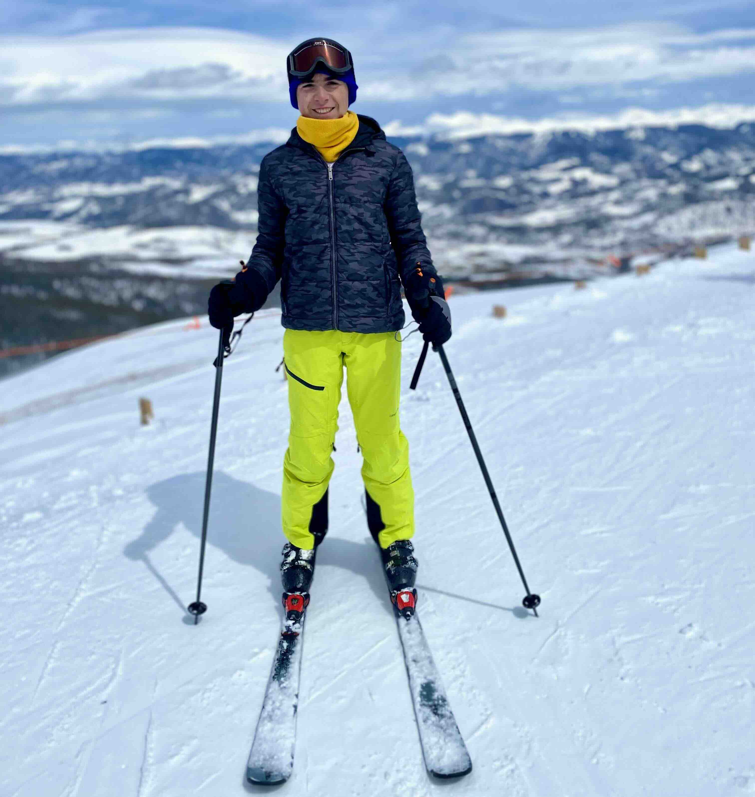
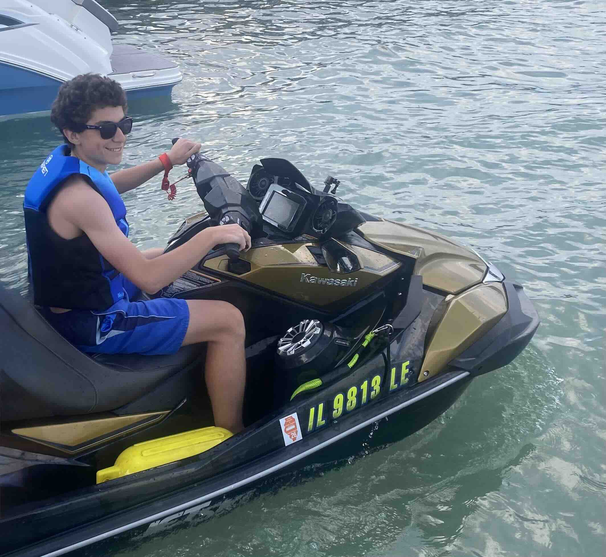
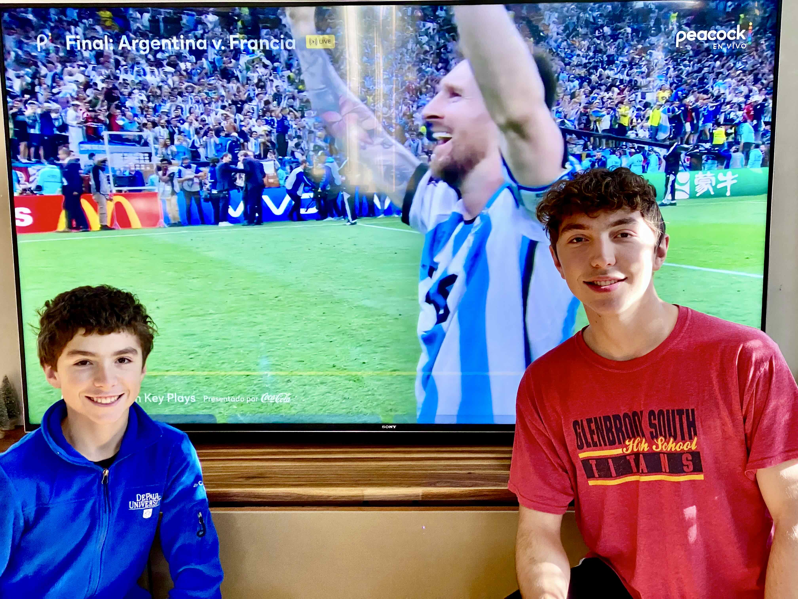
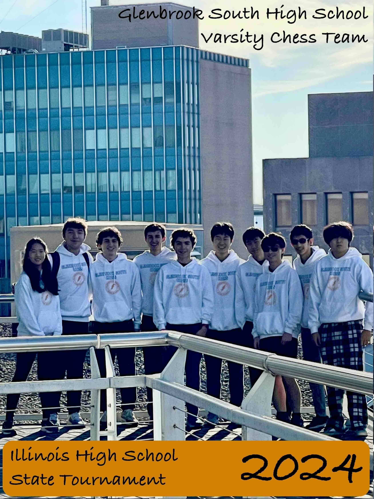

Hobbies
I have many interests outside of academics, sports, and music that keep life exciting. I love traveling to new places, always eager to experience different cultures and perspectives. In the winter, I spend as much time as I can skiing—my favorite slopes are in Keystone, Colorado, where the views are breathtaking. Skiing gives me a rare mix of freedom and adrenaline that no other sport can match. When summer arrives, I head to Lake Michigan to enjoy the water and unwind. I especially love the thrill of riding jet skis across the lake, feeling the spray and speed as the skyline fades in the distance. Beyond that, I enjoy relaxing with music, watching good movies, and catching soccer matches—especially when my favorite player and all-time soccer legend, Lionel Messi, is on the field.
 |
 |
 |
|---|
Chess

Travel
I love exploring new places and cultures, having traveled to 16 U.S. states (IL, MI, AK, FL, CO, HI, TN, LA, NY, PA, CA, IN, MO, DC, WI, OH) and 5 countries (U.S., Canada, Romania, Bulgaria, Greece) so far. Each trip offers a new adventure—from hiking mountain trails to discovering local food and music. My goal is to visit all 50 states and one day travel through Western Europe to experience its rich history and catch a few unforgettable soccer matches along the way.